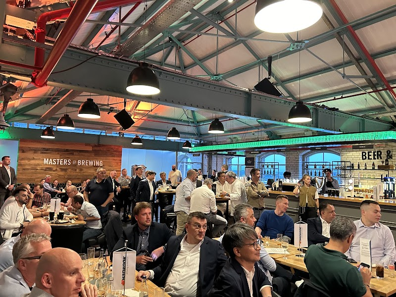

Guinness Storehouse
One of the most fun experiences we did in Dublin was visiting the Guinness Storehouse. This is a multi-level "museum" of sorts explaining how Guinness is made.
Floor G
This was the floor we walked into after getting tickets! It had the gift shop, and the start of our journey, exploring all the ingredients in Guinness.
In the gift shop, I bought a sweatshirt with all the different variations of the Guinness Harp logo!


Floor 1
This floor was all about Roasting and Brewing! They also had a game showing how people how alcohol effects your driving.
There was a cafe and I bought a Guinness Sausage Roll. It was the best one I had all trip!
Floor 2
This floor was centered around the Tasting Rooms. First, they had us smell each of the 4 ingredients in Guinness in big barrels. Next, they gave us a guided tasting.
I could really taste the chocolate on the tip of my tongue! It made me the rest of the Guinnesses of the trip even better!

Floor 3
This floor was all about Guinness's advertising. They had some really cool art which we saw reflected in postcards and magnets in the gift shop!
I really liked this fish guy!
Floor 4
This floor was for The Academy, where you learn to pour your own pint, and the Stoutie Experience, where you get your picture printed on the foam of a pint. We tried the stoutie experience and it was super cool!!
I was able to sneak in Willow to be in my picture with me!

Floor 5
We didn't spend much time here, but it seemed really cute! Arthur's Bar, a traditional irish pub, was pretty packed, so we headed up to the Gravity Bar!
The Gravity Bar
With every experience pack at the Guinness Storehouse, you are given a voucher for a pint of Guinness from the Gravity Bar! It was so cool to drink our pints and overlook Dublin.
An old couple gave us 2 vouchers they weren't using!